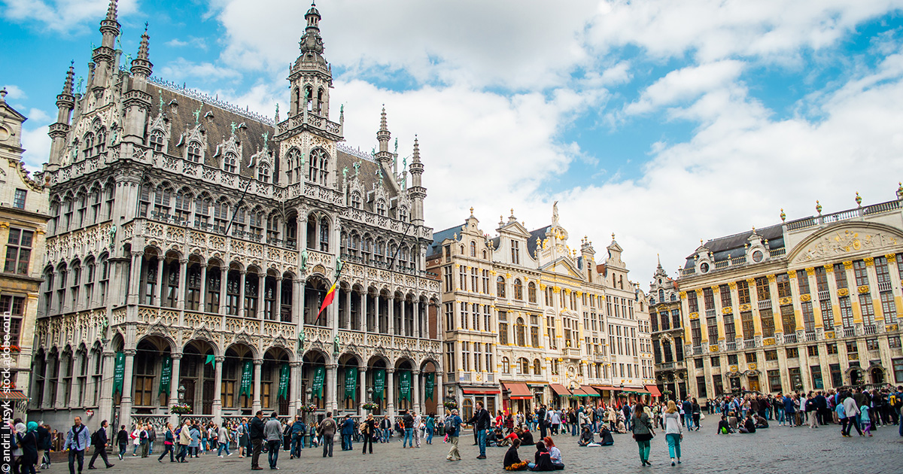

Valentine Burfin
Hello! I'm Valentine! I'm currently studying at ESSEC Business School where I'm pursuing a Global Bachelor in Business Administration!
Discover ESSECWho am I?
I was born in Paris, but thanks to my parents, I had the opportunity to move a lot during my childhood. I lived for 5 years in Belgium until I was 10 years old. Then my parents decided to move to the other side of the world: to Singapore! I lived there for 2 years. There, everything was different, I discovered new things, new cultures, and I loved it! Finally, before going back to France, I moved to Tokyo for 3 years. Since then, Japan has been my favorite country and I wish I could come back one day.
Travel


Thanks to my childhood, I am passionate about traveling. Next year, thanks to ESSEC's intercampus exchanges, I am going back to Singapore for 3 months. I am looking forward to seeing my old home and traveling in Asia with another point of view, now that I'm older.
My sports
Sport has always been something I was passionate about. I've been playing tennis since I was six years old. Tennis has always been something I love as it reduces my stress and makes me think about only one thing: winning. Skiing has also always been very important in my life. Every year, I am grateful to go skiing with my family. I love this sport and I hope I will be able to continue it for a long time.